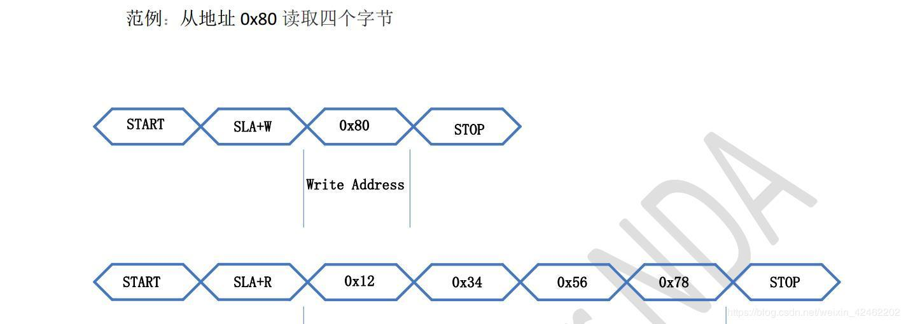

2.3. I2C驱动框架以及I2C设备驱动¶
2.3.1. I2C驱动框架¶
2.3.1.1. 主要对象¶
I2C总线
struct bus_type i2c_bus_type = {
.name = "i2c",
.match = i2c_device_match, //匹配规则
.probe = i2c_device_probe, //匹配成功后的行为
.remove = i2c_device_remove,
.shutdown = i2c_device_shutdown,
.pm = &i2c_device_pm_ops,
};
I2C总线对应这/bus下的一条总线，这个I2C总线结构体管理着I2C设备与I2C驱动的匹配，删除等操作，当设备或者驱动 注册到总线时，I2C总线会调用i2c_device_match函数查看I2C设备和驱动是否匹配，如果匹配则调用i2c_device_probe函数 ，进而调用I2C驱动的probe函数。
注：i2c_device_match会管理i2c设备和总线匹配规则，这将和如何编写I2C驱动程序息息相关。
I2C驱动
struct i2c_driver {
int (*probe)(struct i2c_client *, const struct i2c_device_id *); //probe函数
struct device_driver driver; //表明这是一个驱动
const struct i2c_device_id *id_table; //要匹配的从设备信息(名称)
int (*detect)(struct i2c_client *, struct i2c_board_info *); //设备探测函数
const unsigned short *address_list; //设备地址
struct list_head clients; //设备链表
};
I2C设备
struct i2c_client {
unsigned short addr; //设备地址
char name[I2C_NAME_SIZE]; //设备名称
struct i2c_adapter *adapter; //适配器，I2C控制器。
struct i2c_driver *driver; //设备对应的驱动
struct device dev; //表明这是一个设备
int irq; //中断号
struct list_head detected; //节点
};
I2C适配器
i2c_adapter对应物理上的一个i2c适配器
struct i2c_adapter { //适配器
unsigned int id; //适配器的编号
const struct i2c_algorithm *algo; //算法，发送时序
struct device dev; //表明这是一个设备
};
i2c_algorithm 对应着一套通讯方法
struct i2c_algorithm {
/* 作为主设备时的发送函数 */
int (*master_xfer)(struct i2c_adapter *adap, struct i2c_msg *msgs,
int num);
/* 作为从设备时的发送函数 */
int (*smbus_xfer) (struct i2c_adapter *adap, u16 addr,
unsigned short flags, char read_write,
u8 command, int size, union i2c_smbus_data *data);
};
I2C驱动有4个重要的东西，I2C总线、I2C驱动、I2C设备、I2C适配器
I2C总线：维护着两个链表(I2C驱动，I2C设备)，管理着I2C设备和驱动的匹配以及删除
I2C驱动：对应着I2C设备驱动程序
I2C设备：对应着具体硬件设备的抽象
I2C适配器： 用于I2C驱动和I2C设备间的通讯，是SOC上I2C控制器的一个抽象
I2C总线运行机制

I2C驱动框架可以分为4部分，I2C核心、I2C设备、I2C驱动、I2C适配器，其中I2C总线位于I2C核心中。
2.3.1.2. 内核源码分析¶
注册I2C设备
设备树解析过程
kernel会为设备树root节点下所有带 compatible 属性的节点都分配并注册一个 platform_device 。
另外如果某个节点的compatible符合某些matches条件，则会为该节点下的所有带compatible属性的子节点(child)
也分配并注册一个platform_device
Platform_devce数据结构如下
struct platform_device {
const char *name;
int id;
bool id_auto;
/* 以此挂入统一设备模型 */
struct device dev;
u64 platform_dma_mask;
/* io和irq资源的总数 */
u32 num_resources;
/* 指向resource数组 */
struct resource *resource;
const struct platform_device_id *id_entry;
};
解析设备树以及生成platform_device的过程如下所示：
//第一层
/* kerner加载 */
start_kernel
--> arch_call_rest_init
--> rest_init
--> kernel_init
--> kernel_init_freeable
--> do_basic_setup
--> do_initcalls
--> of_platform_default_populate_init
//第二层
/* drivers/of/platform.c */
static int __init of_platform_default_populate_init(void)
{
/* 检查of_root（"/"节点）是否为NULL */
if (!of_have_populated_dt())
return -ENODEV;
/* 进行实际的platform_device填充操作 */
of_platform_default_populate(NULL, NULL, NULL);
return 0;
}
/* 在do_initcalls会被调用执行 */
arch_initcall_sync(of_platform_default_populate_init);
//第三层
const struct of_device_id of_default_bus_match_table[] = {
{ .compatible = "simple-bus", },
{ .compatible = "simple-mfd", },
{ .compatible = "isa", },
#ifdef CONFIG_ARM_AMBA
{ .compatible = "arm,amba-bus", },
#endif /* CONFIG_ARM_AMBA */
{} /* Empty terminated list */
};
int of_platform_default_populate(struct device_node *root,
const struct of_dev_auxdata *lookup,
struct device *parent)
{
/* of_default_bus_match_table即为上述的matches条件，其他形参均为NULL */
return of_platform_populate(root, of_default_bus_match_table, lookup,
parent);
}
EXPORT_SYMBOL_GPL(of_platform_default_populate);
//第五层
int of_platform_populate(struct device_node *root,
const struct of_device_id *matches,
const struct of_dev_auxdata *lookup,
struct device *parent)
{
struct device_node *child;
int rc = 0;
/* 传入的root为NULL，获取"/"节点 */
root = root ? of_node_get(root) : of_find_node_by_path("/");
/* 遍历"/"节点下所有的child节点 */
for_each_child_of_node(root, child) {
/* 分配并创建platform_device */
rc = of_platform_bus_create(child, matches, lookup, parent, true);
if (rc) {
of_node_put(child);
break;
}
}
/* 设置已填充标志位，避免重复填充 */
of_node_set_flag(root, OF_POPULATED_BUS);
of_node_put(root);
return rc;
}
EXPORT_SYMBOL_GPL(of_platform_populate);
//第六层
/* bus：root下的child节点
* matches：of_default_bus_match_table
* lookup：NULL
* parent：NULL
* strict：true
*/
static int of_platform_bus_create(struct device_node *bus,
const struct of_device_id *matches,
const struct of_dev_auxdata *lookup,
struct device *parent, bool strict)
{
const struct of_dev_auxdata *auxdata;
struct device_node *child;
struct platform_device *dev;
const char *bus_id = NULL;
void *platform_data = NULL;
int rc = 0;
/* 只为含"compatible"属性的节点创建platform_device */
if (strict && (!of_get_property(bus, "compatible", NULL))) {
return 0;
}
/* 跳过符合of_skipped_node_table条件的节点 */
if (unlikely(of_match_node(of_skipped_node_table, bus))) {
return 0;
}
/* 跳过已经创建过platform_device的节点 */
if (of_node_check_flag(bus, OF_POPULATED_BUS)) {
return 0;
}
/* 创建并填充platform_device */
dev = of_platform_device_create_pdata(bus, bus_id, platform_data, parent);
/* 1、创建platform_device失败，则直接返回，继续遍历root下其他child node
* 2、创建platform_device成功，但当前node不符合matches条件，即compatible属性值
* 不为"simple-bus"、"simple-mfd"、"isa"等时，也直接返回；否则继续为当前node
* 下所有含compatible属性的child node创建并填充platform_device
*/
if (!dev || !of_match_node(matches, bus))
return 0;
/* 遍历当前node下的所有child node */
for_each_child_of_node(bus, child) {
/* 递归调用of_platform_bus_create函数 */
rc = of_platform_bus_create(child, matches, lookup, &dev->dev, strict);
if (rc) {
of_node_put(child);
break;
}
}
/* 设置已填充标志位：OF_POPULATED_BUS */
of_node_set_flag(bus, OF_POPULATED_BUS);
return rc;
}
//第七层
static struct platform_device *of_platform_device_create_pdata(
struct device_node *np,
const char *bus_id,
void *platform_data,
struct device *parent)
{
struct platform_device *dev;
/* of_device_is_available: 检查节点的status属性，如果没有该属性，或者属性值
* 为"ok"、"okay"，则认为该node是有效的
*/
if (!of_device_is_available(np) ||
of_node_test_and_set_flag(np, OF_POPULATED))
return NULL;
/* 创建platform_device结构体，并对结构体成员进行赋值:
* 如dev->dev.of_node = of_node_get(np)，即将当前的device_node结构体
* 赋值给了platform_device->device.of_node成员，即完成绑定操作
*/
dev = of_device_alloc(np, bus_id, parent);
if (!dev)
goto err_clear_flag;
dev->dev.coherent_dma_mask = DMA_BIT_MASK(32);
if (!dev->dev.dma_mask)
dev->dev.dma_mask = &dev->dev.coherent_dma_mask;
/* struct bus_type platform_bus_type = {
* .name = "platform",
* .dev_groups = platform_dev_groups,
* .match = platform_match,
* .uevent = platform_uevent,
* .dma_configure = platform_dma_configure,
* .pm = &platform_dev_pm_ops,
* };
* 设置struct device的总线类型，此后与platform_driver的匹配即是通过
* platform_match函数
*/
dev->dev.bus = &platform_bus_type;
dev->dev.platform_data = platform_data;
of_msi_configure(&dev->dev, dev->dev.of_node);
/* 调用device_add加入统一设备模型 */
if (of_device_add(dev) != 0) {
...
}
return dev;
}
至此，为所有设备树中符合条件的node都创建了platform_device结构体，node下描述的资源也解析到了platform_device
中，并通过i dev成员 将该node描述的设备加入了统一设备模型。
在统一设备模型中，每次device或者driver加入bus中，都会调用对应bus的match函数(如platform_match)对driver或者device 链表进行遍历，如有匹配项，则进入driver的probe函数。
spi、i2c等真实的物理总线的控制器设备(controller)是作为 platform_device 挂入 platform_bus 的，所以在
spi_master或者i2c_adapter等driver注册到platform_bus时，会与device进行配对并进入driver的probe函数。在probe函数
中会对控制器节点下的子节点(即：spi、i2c从设备)进行解析，创建对应的spi_device、i2c_client等结构体，最终挂入对应的
spi、i2c总线。
这样，设备树中描述的所有设备都有了对应的xxx_device，并加入了统一设备模型中。
i2c从设备节点创建过程
/* 首先找到i2c控制器(adaper)驱动,他是与设备树通过compatible匹配 */
static const struct of_device_id i2c_imx_dt_ids[] = {
{ .compatible = "fsl,imx1-i2c", .data = &imx1_i2c_hwdata, },
{ .compatible = "fsl,imx21-i2c", .data = &imx21_i2c_hwdata, },
{ .compatible = "fsl,vf610-i2c", .data = &vf610_i2c_hwdata, },
{ .compatible = "fsl,imx7d-i2c", .data = &imx7d_i2c_hwdata, },
{ /* sentinel */ }
};
MODULE_DEVICE_TABLE(of, i2c_imx_dt_ids);
static struct platform_driver i2c_imx_driver = {
.probe = i2c_imx_probe,
.remove = i2c_imx_remove,
.driver = {
.name = DRIVER_NAME,
.pm = I2C_IMX_PM_OPS,
.of_match_table = i2c_imx_dt_ids,
},
.id_table = imx_i2c_devtype,
};
匹配后进入i2c_imx_probe(struct platform_device *pdev)函数
//第一层
i2c_imx_probe //i2c-imx.c
--> i2c_add_numbered_adapter //i2c-core-base.c
--> __i2c_add_numbered_adapter //i2c-core-base.c
--> i2c_register_adapter //i2c-core-base.c
-->of_i2c_register_devices //i2c-core-of.c
//第二层 i2c-core-of.c
void of_i2c_register_devices(struct i2c_adapter *adap)
{
struct device_node *bus, *node;
struct i2c_client *client;
/* 获取总线 */
bus = of_get_child_by_name(adap->dev.of_node, "i2c-bus");
if (!bus)
bus = of_node_get(adap->dev.of_node);
/* 遍历有效的子节点 */
for_each_available_child_of_node(bus, node) {
/* 如已被填充则跳过 */
if (of_node_test_and_set_flag(nc, OF_POPULATED))
continue;
client = of_i2c_register_device(adap, node);
}
}
//第三层 of_i2c_register_device
static struct i2c_client *of_i2c_register_device(struct i2c_adapter *adap,
struct device_node *node)
{
struct i2c_board_info info = {};
const __be32 *addr_be;
u32 addr;
/* 获取I2C从设备地址 */
addr_be = of_get_property(node, "reg", &len);
addr = be32_to_cpup(addr_be);
/* 填充info */
/* 填充info.type */
if (of_modalias_node(node, info.type, sizeof(info.type)) < 0) {
dev_err(&adap->dev, "of_i2c: modalias failure on %pOF\n",
node);
return ERR_PTR(-EINVAL);
}
/* 填充info.addr */
info.addr = addr;
/* 如上注册 */
result = i2c_new_device(adap, &info);
}
注册I2C驱动
与注册设备驱动过程基本一致
//第一层
int i2c_register_driver(struct module *owner, struct i2c_driver *driver)
{
driver->driver.bus = &i2c_bus_type; //指定I2C总线
driver_register(&driver->driver); //向总线注册驱动
}
//第二层
int driver_register(struct device_driver *drv)
{
bus_add_driver(drv);
}
//第三层
int bus_add_driver(struct device_driver *drv)
{
driver_attach(drv); //此函数会遍历总线设备链表进行操作
klist_add_tail(&priv->knode_bus, &bus->p->klist_drivers); // 添加进bus的driver链表中
}
//第四层
int driver_attach(struct device_driver *drv)
{
/* 遍历总线的设备链表，调用__driver_attach */
bus_for_each_dev(drv->bus, NULL, drv, __driver_attach);
}
//第五层
static int __driver_attach(struct device *dev, void *data)
{
if (!driver_match_device(drv, dev))
return 0;
driver_probe_device(drv, dev);
}
I2C adapter
I2C适配器有两个重要的数据结构, i2c_adapter 和 i2c_algorithm
//第一层
struct i2c_adapter{
const struct i2c_algorithm *algo; /* 总线访问算法 */
}
/* i2c_algorithm 就是I2C适配器与IIC设备进行通信的方法。*/
//第二层
struct i2c_algorithm {
......
/* I2C适配器的传输函数,此函数完成与IIC设备的通信 */
int (*master_xfer)(struct i2c_adapter *adap,
struct i2c_msg *msgs,
int num);
/* SMBUS总线的传输函数 */
int (*smbus_xfer) (struct i2c_adapter *adap, u16 addr,
unsigned short flags, char read_write,
u8 command, int size, union i2c_smbus_data *data);
/* To determine what the adapter supports */
u32 (*functionality) (struct i2c_adapter *);
......
};
/* 实例-构建适配器 */
static const struct i2c_algorithm s3c24xx_i2c_algorithm = {
.master_xfer = s3c24xx_i2c_xfer,
.functionality = s3c24xx_i2c_func,
};
static int s3c24xx_i2c_probe(struct platform_device *pdev)
{
i2c->adap.algo = &s3c24xx_i2c_algorithm; //构建了算法
i2c_add_numbered_adapter(&i2c->adap); //注册了适配器
}
I2C数据传输
设备驱动中I2C数据传输时通过I2C适配器完成的，可使用 i2c_transfer 来传输I2C数据，如下
int i2c_transfer(struct i2c_adapter *adap, struct i2c_msg *msgs, int num)
{
adap->algo->master_xfer(adap, msgs, num); //调用适配器的算法
}
2.3.2. 设备驱动编写方法¶
I2C设备驱动中重点关注两个数据结构 i2c_clent 和 i2c_driver ,前是用来描述设备信息的，后者是描述驱动的。
2.3.2.1. 注册设备¶
设置I2C设备驱动信息
/* 设备树匹配列表 */
static const struct of_device_id my_i2c_dev_of_match[] = {
{ .compatible = "my_i2c_dev, 0" },
{ /* Sentinel */ }
};
/* i2c驱动结构体 */
static struct i2c_driver my_i2c_drv = {
.probe = ap3216c_probe,
.remove = ap3216c_remove,
.driver = {
.owner = THIS_MODULE,
.name = "no",
.of_match_table = my_i2c_dev_of_match,
},
};
注册I2C设备驱动
static int __init my_i2c_drv_init(void)
{
i2c_add_driver(&my_i2c_drv);
return 0;
}
注册I2C设备
/* 在i2c节点下添加设备信息 */
&i2c1 {
my_i2c_dev@20 {
compatible = "my_i2c_dev,0"
}
}
2.3.2.2. 数据传输函数¶
传输函数
/*
* adap：i2c适配器
* msgs：消息数据
* num：数组的个数
*/
int i2c_transfer(struct i2c_adapter *adap, struct i2c_msg *msgs, int num)
传输报文msg的组成
struct i2c_msg {
__u16 addr; //从设备地址
__u16 flags; //读或写
__u16 len; //消息的长度
__u8 *buf; //消息
};
示例：
/* 定义 i2c_msg 结构体 */
struct i2c_msg msg[2];
char val[10]
/* 填充msg */
msg[0].addr = my_i2c_client->addr; /* 这个client在probe函数中得到的 */
msg[0].flags = 0; /* 0表示写，1表示读 */
msg[0].buf = 0x80; /* 写：要发送的数据地址，读：读取到的数据存放的地址 */
msg[0].len = 1; /* 想要传输的字节数 */
/* 填充msg */
msg[1].addr = my_i2c_client->addr; /* 这个client在probe函数中得到的 */
msg[1].flags = 1; /* 1表示读 */
msg[1].buf = val; /* 读到的数据存在这里 */
msg[1].len = 4; /* 想要读取的字节数 */
/* 传输数据 */
i2c_transfer(my_i2c_client->adapter, msg, 2); /* 有两个msg */